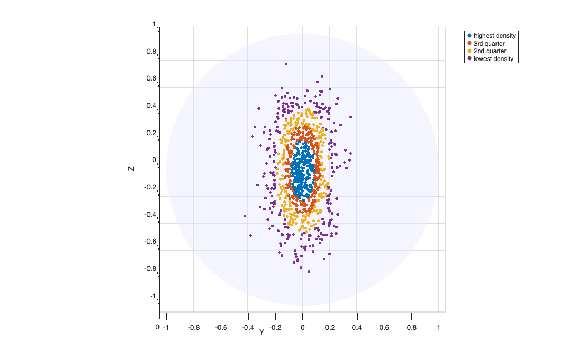

logKentpdfFS
logKentpdfFS computes the log-density of the Kent distribution on S^
Syntax
logf=logKentpdfFS(Y, gamma1, gamma2, gamma3, kappa, beta)example
Description
logKentpdfFS evaluates, for an n-by-3 matrix Y of unit vectors on S^2, the log-density of a single Kent (Fisher-Bingham FB5) component:
log f(x; kappa, beta, Gamma) = -log c(kappa,beta) + kappa*(gamma3'*x) + beta*[(gamma1'*x)^2 - (gamma2'*x)^2] where:
gamma3 is the 3-by-1 mean direction (pole) unit vector, gamma1 is the 3-by-1 major-axis unit vector (gamma1 perp gamma3), gamma2 = cross(gamma3,gamma1) is the minor-axis unit vector, kappa >= 0 is the concentration parameter, beta >= 0 is the ovalness parameter (must satisfy beta < kappa/2), c(kappa,beta) is the normalizing constant computed by KentlogC.
The notation follows Kent (1982, eq. 2) and Mardia et al. (2021, eq. 2), but with the axis labelling convention of Dong & Melnykov (2024):
gamma1 = major axis (direction of maximum secondary concentration) gamma2 = minor axis (direction of minimum secondary concentration) gamma3 = mean direction / pole This is the Kent-distribution counterpart of logvMFpdfFS: it plays the same role in tclustkent that logvMFpdfFS plays in tclustvmf — it provides the per-unit log-discriminant values that enter the E-step.
The special case beta=0 reduces to the vMF density with parameter kappa:
the quadratic term vanishes and the formula coincides with logvMFpdfFS (up to a constant difference from the different normalizing constants, which is absorbed into logc(kappa,0); see KentlogC).
Examples
Related Examples
 Log-density of simulated Kent data shown on the sphere.
Log-density of simulated Kent data shown on the sphere.
Log-density of simulated Kent data shown on the sphere.The units are divided into 4 groups according to the quartiles of their log-density: the groups are concentric elliptical rings.
rng(3)
n = 1000; kappa = 40; beta = 15;
[Y, Gamma] = Kentrnd(n, kappa, beta, [1 0 0], [0 0 1]);
logf = logKentpdfFS(Y, Gamma(:,1), Gamma(:,2), Gamma(:,3), kappa, beta);
q = quantile(logf, [0.25 0.5 0.75]);
group = 1 + (logf<q(3)) + (logf<q(2)) + (logf<q(1));
sphereplot(Y, 'group', group, 'labels', ...
{'highest density','3rd quarter','2nd quarter','lowest density'});
Input Arguments
Output Arguments
More About
References
Kent, J.T. (1982), The Fisher-Bingham distribution on the sphere, J. Roy. Statist. Soc., B, Vol. 44, pp. 71-80.
Mardia, K.V., Barber, S., Burdett, P.M., Kent, J.T. and Hamelryck, T.
(2021), Mixture models for spherical data with applications to protein bioinformatics, arXiv:2104.13140.
Dong, A. and Melnykov, V. (2024), Contaminated Kent mixture model for clustering non-spherical directional data with heavy tails or scatter, Statistics and Probability Letters, Vol. 208, 110058.
See Also
tclustkent
|
KentlogC
|
KentMstepFS
|
restrKentFS
|
Kentrnd
|
Kentcap
|
sphereplot